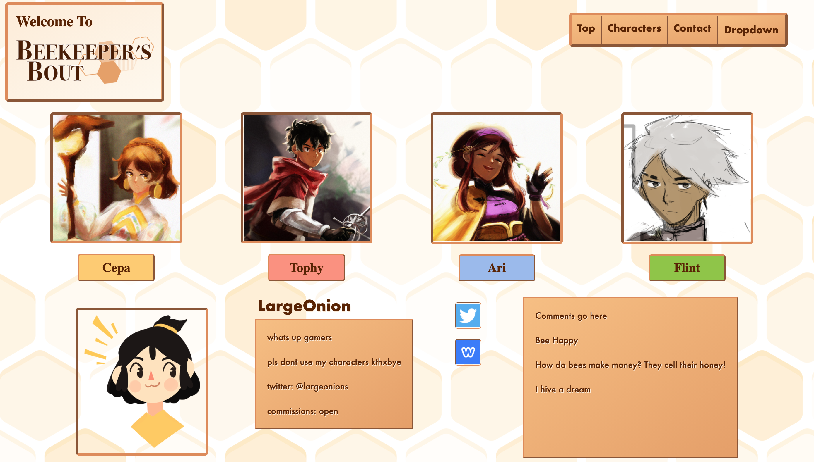
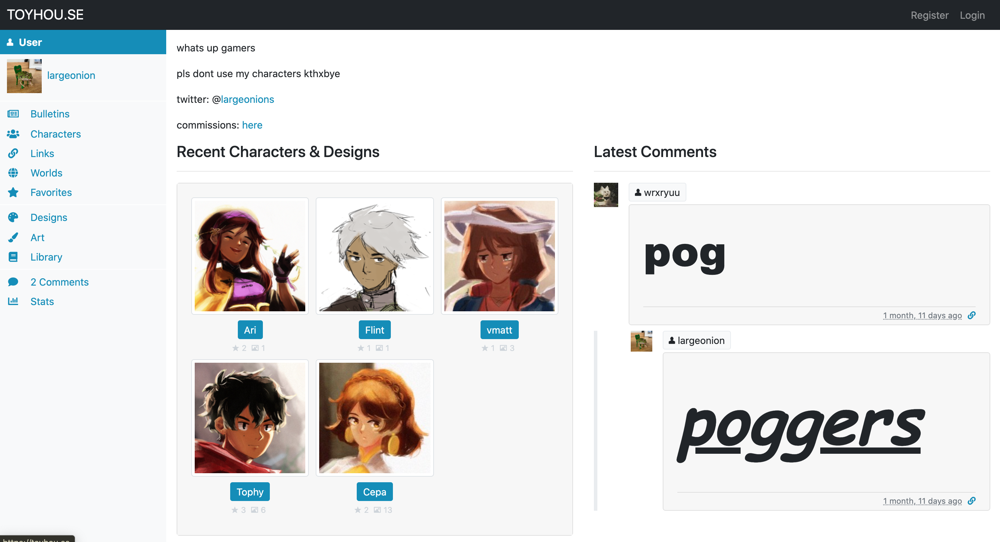
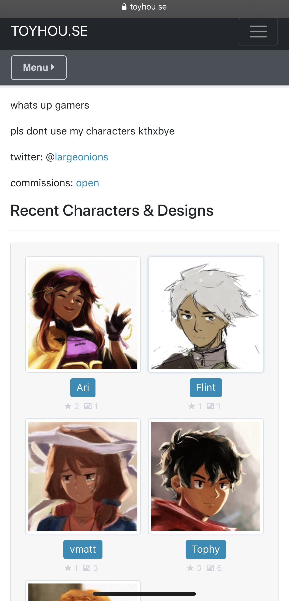
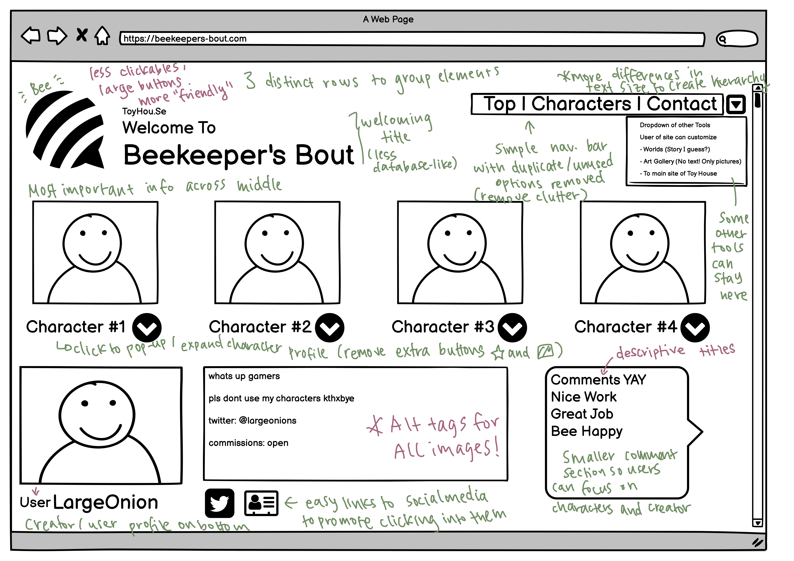
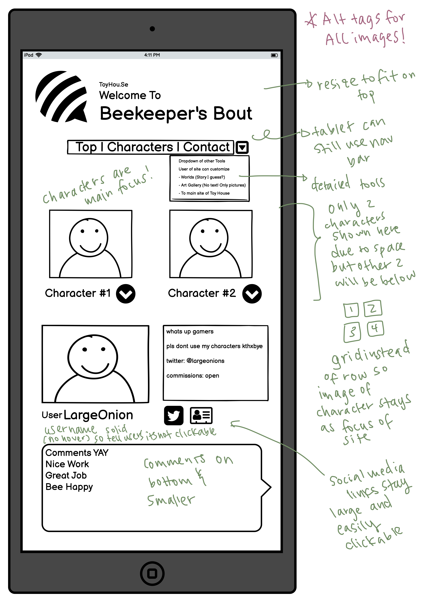
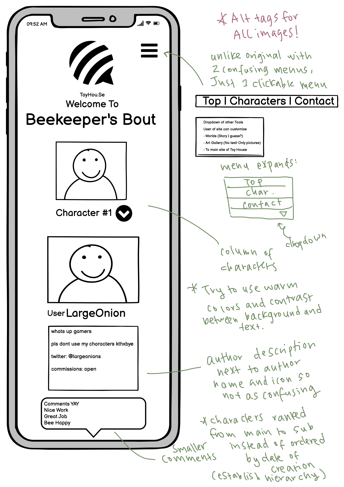

<!doctype html>
<html lang="en">

</html>

<head>
    <!-- Required meta tags -->
    <meta charset="utf-8">
    <meta name="viewport" content="width=device-width, initial-scale=1, shrink-to-fit=no">

    <!-- Bootstrap CSS -->
    <link rel="stylesheet" href="https://stackpath.bootstrapcdn.com/bootstrap/4.5.2/css/bootstrap.min.css"
        integrity="sha384-JcKb8q3iqJ61gNV9KGb8thSsNjpSL0n8PARn9HuZOnIxN0hoP+VmmDGMN5t9UJ0Z" crossorigin="anonymous">

    <title>Personas</title>
    <link rel="stylesheet" href="index.css">
    <!-- TODO: add additional links here! e.g. fonts, icons, more stylesheets, etc. -->
    <meta content="width=device-width, initial-scale=1" name="viewport" />
    <meta charset="utf-8">
</head>

<body>
    <!-- TODO: put your HTML code here! -->
    <div class="nav-wrapper">
        <nav class="navbar navbar-expand-lg navbar-light" style="width: 100%">
            <a class="navbar-brand" href="#">
                <h1>Kelly Wang</h1>
            </a>
            <button class="navbar-toggler" type="button" data-toggle="collapse" data-target="#navi">
                <span class="navbar-toggler-icon"></span>
            </button>

            <div class="collapse navbar-collapse" id="navi">
                <ul class="navbar-nav">
                    <li class="nav-item">
                        <a class="nav-link" href="../home.html">Projects <span class="sr-only">(current)</span></a>
                    </li>
                    <li class="nav-item">
                        <a class="nav-link" href="../about.html">About</a>
                    </li>
            </div>
        </nav>
    </div>
    <div class="heading">
        <h1 style="padding-top: 10px">Personas & Storyboarding</h1>
        <h3 style="padding-bottom: 10px"> Focus on Kitchen Compost Bin</h3>
    </div>
    <div class="wrapper">
        <div class="intro">
            <div class="photo-div-50">
                
            </div>
            <div class="intro-card">
                <div class="flex-col">
                    <h2>Introduction</h3>
                        <p>
                            During shopping period for classes in early January 2020, right before the pandemic hit, I
                            was
                            able
                            to meet a wonderful person who loves to draw. She creates wonderful character designs and
                            crafts
                            an
                            awe-inspiring world and story for her characters. I found out that she stores some of her
                            characters
                            on a site called Toy House (as displayed below in part 1).
                        </p>
                        <p>
                            Though the existing website does a decent job to let viewers look at my friend’s characters,
                            I
                            was
                            wondering if there is a better way to convey the magical world she is building through a
                            re-design
                            of the website. Thus (with my still-in-the-learning HTML/CSS skills) I tried to design a
                            website
                            that would feel more personal and unique.
                        </p>
                        <p>
                            I sincerely thank my friend LargeOnion for letting me borrow her beautiful art to set up
                            this
                            re-designed website project. She loves bees so I tried to go with a honey/sweet aesthetic
                            for
                            the
                            portfolio presentation as well.
                        </p>
                        <h6>
                            Please enjoy!
                        </h6>
                </div>
            </div>
        </div>
        <div class="body-card">
            <div class="flex-col">
                <h2>Identifying Usability Problems</h2>
                <h4 style="padding-top: 20px"><a href="https://toyhou.se/7756329.cepa" target="_blank"> Toy
                        House Website
                    </a>
                </h4>
                <div class="gallery">
                    
                    <div class="photo-div-30">
                    </div>
                </div>
                <div class="spacer"></div>
                <h5>Usability Issues</h5>
                <h6 style="text-indent: 0">General Usability:</h6>
                <p style="text-indent: 0">
                    ・3 column-ish grouping which does a loose job of gathering elements
                    <br>
                    ・Lack of hierarchy: important information (like navigation tools and author bio) have small
                    text while
                    the comment section takes up way too much space
                    <br>
                    ・Even the buttons are just all layed out instead of catagorized, making it have a more
                    database-ish. I
                    want to make the page more ‘cozy’ and feel more creative.
                    <br>
                    ・Generally, very database-like with a lot of duplicate categories casual users can’t tell
                    the difference
                    between.
                </p>
                <h6 style="text-indent: 0">Learnability:</h6>
                <p style="text-indent: 0">
                    ・Feels like a standard database layout (reminds me of canvas) so may be easy to learn for
                    people who are
                    used to these sorts of “online data storage platforms”

                    <br>
                    ・Character pages are similar to author page but slightly different (which kind of threw me
                    off and I got
                    lost navigating between pages)

                    <br>
                    ・Profile-pages have 2 kinds: users and creations. The creation is treated as a ‘user’ making
                    it
                    difficult to distinguish between what is the creator and what is the creation.
                    <br>
                    ・Some small elements/buttons are difficult to see (and I did not discover them until later
                    uses)
                    <br>
                    [For example: small buttons below characters on creator’s “recent characters & designs”
                    section]
                </p>

                <h6 style="text-indent: 0">Memorability:</h6>
                <p style="text-indent: 0">
                    ・A bit difficult to navigate through pages: often forget which buttons are clickable and
                    which are not.
                    <br>
                    ・Some categories are duplicate and I forget the differences between them (characters/designs
                    all seem to
                    have the same information but subtly different)
                    <br>
                    ・Author home page “recent characters & designs” are similar but different than the character
                    page
                    (character page has folders sorting characters by story/worls)
                </p>
                <h6 style="text-indent: 0">Efficiency:</h6>
                <p style="text-indent: 0">
                    ・Difficult to navigate back and forth between pages: Author profile page, character page,
                    story page
                    etc. links are hard to grasp and easy to get lost jumping between pages
                    <br>
                    ・Want to be able to jump between character pages but have to go through Author page or story
                    page
                    <br>
                    ・Inviting dead-end: “User” text is bolded and seems clickable but actually isn’t
                    <br>
                    ・Many buttons leading to tools/locations that author does not necessarily need/use
                    (bulliten, library)

                    <br>
                    ・Categories may be useful for other users but for my friend who focuses on storing images as
                    info, the
                    library section may not be useful (hiding it will help viewers navigate)

                    <br>
                    ・Some buttons lead to pop-up windows that take up too much space, making it difficult to
                    exit and focus
                    on the relevant information
                    <br>
                    [For example: clicking on ‘favorites’ of a character brings up a list of user with gigantic
                    profile
                    pictures and covers the character description (distracting)]
                </p>
                <div class="spacer"></div>
                <h5>Accessibility Issues</h5>
                <p>There seems to be a lack of font hierarchy so it is difficult to map pages to buttons and
                    descriptions to
                    sections. The page in general lack of consistency in the distinction between buttons and
                    text. Some
                    buttons are also very low-contrast. For example, the very-hard-to-read small star icon below
                    characters
                    are not clickable but the image icon next to it is. Most text is read-able (no image with a
                    lot of text)
                    but there is a lack of context/text hierarchy. There is also a lack of descriptive titles
                    for
                    navigation. This leads to the screen reader (voiceover) reading text without enough context
                    for the
                    reader to understand what they are listening to. Furthermore, images either do not have
                    accurate
                    descriptions (just numbers or random characters) or the images straight-up do not have
                    informative
                    alt-tags (alternate text) for voiceover or for times where the images fail to load. Lastly,
                    there are
                    empty links inviting dead-ends (most apparent in comment section) and redundant links which
                    all lead to
                    the same page.</p>
                <div class="spacer"></div>
                <h5>User Feedback from LargeOnion</h5>
                <p style="text-indent: 0">
                    ・Most tools are clustered on the left (feels unbalanced)
                    <br>
                    ・Lack of efficiency when trying to update: have to go to the character page and then manage
                    images >
                    upload image
                    <br>
                    ・Most used tools are: create character, edit profile, upload image, and sort images
                    <br>
                    ・Wish the page showed gallery view of characters by default
                </p>
            </div>
        </div>
        <div class="body-card">
            <div class="flex-col">
                <h2>Visual Redesign</h2>
                <div class="spacer"></div>
                <h5>Low-fidelity Wireframing</h5>
                <div class="gallery">
                    <div class="photo-div"></div>
                    <div class="photo-div-30"></div>
                    <div class="photo-div-30"></div>
                </div>
                <div class="spacer"></div>
                <div class="spacer"></div>
                <h5>High-fidelity Prototyping</h5>
                <div class="gallery">
                    <div class="photo-div"></div>
                    <div class="photo-div-30"></div>
                    <div class="photo-div-30"></div>
                </div>
                <p>Clean Version Here: <a href="hf.pdf" alt="High-fidelity Prototype Clean Version PDF">hf-clean</a>.
                </p>
                <div class="spacer"></div>
                <h5>Visual Design Style Guide</h5>
                <div class="photo-div"></div>
            </div>
        </div>
        <div class="body-card">
            <div class="flex-col">
                <h2>Responsive Redesign</h2>
                <h4><a href="https://beekeepers-bout.herokuapp.com/" target="_blank"> Redesigned Website
                    </a>
                </h4>
                <h5>Responsive Observations</h5>
                <p style="text-indent: 0">
                    ・I used flexboxes to display my items so I'm glad they wrapped well as the screen changed
                    size

                    <br>
                    ・I used media queries to change the social media icons so even on smaller screens they can
                    be easily clicked

                    <br>
                    ・In inspect elements, I changed font to 150% and 200% and I am glad the background/buttons
                    adjust to contain the text
                    <br>
                    ・I enjoyed looking at what LargeOnion is in different languages
                    <br>
                    ・WAVE found my empty links (because buttons/nav bar is not fully implemented)
                    <br>
                    ・All my alt tags are there! [yay!]
                </p>
            </div>
        </div>
        <div class="body-card">
            <div class="flex-col">
                <h2>Conclusion and Takeaways</h2>
                <p>From this redesign project, I learned how to identify accessibility and usability issues hidden amongst interfaces. Furthermore, I learned how to make wireframes (lo-fi and hi-fi mockups) with programs such as Balsamiq and Adobe XD. I was also able to strengthen my HTML skills (coding the entire website from scratch). One important concept I learned was to use media queries to allow the website to be responsive.</p>
                <h4>
                    Takeaways:
                  </h4>
                  <ol>
                    <li>I should have use computer software to annotate mockups because right now they are a bit difficult to read.</li>
                    <li>I realized that when designing, hierarchy is very important. I should be braver in using different font sizes.</li>
                    <li>For re-design, I learned that having clear sections and clean interfaces will benefit the webpages readability. </li>
                    <li>I hand-coded everything for this website so some of the components are a bit clunky. I have learned how to use bootstrap after this assignment which helped me make better webpages (check out the Development project!) </li>
                  </ol>   
            </div>
        </div>
    </div>
</body>

<!-- Optional JavaScript -->
<!-- jQuery first, then Popper.js, then Bootstrap JS -->
<script src="https://code.jquery.com/jquery-3.5.1.slim.min.js"
    integrity="sha384-DfXdz2htPH0lsSSs5nCTpuj/zy4C+OGpamoFVy38MVBnE+IbbVYUew+OrCXaRkfj"
    crossorigin="anonymous"></script>
<script src="https://cdn.jsdelivr.net/npm/popper.js@1.16.1/dist/umd/popper.min.js"
    integrity="sha384-9/reFTGAW83EW2RDu2S0VKaIzap3H66lZH81PoYlFhbGU+6BZp6G7niu735Sk7lN"
    crossorigin="anonymous"></script>
<script src="https://stackpath.bootstrapcdn.com/bootstrap/4.5.2/js/bootstrap.min.js"
    integrity="sha384-B4gt1jrGC7Jh4AgTPSdUtOBvfO8shuf57BaghqFfPlYxofvL8/KUEfYiJOMMV+rV"
    crossorigin="anonymous"></script>

</body>